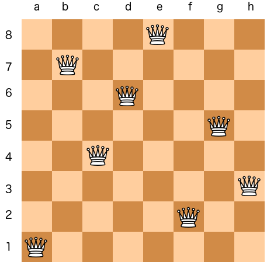
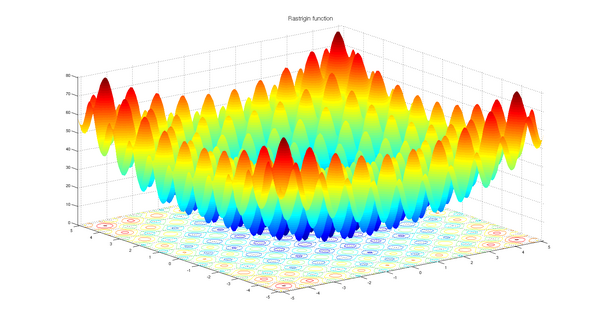

Examples
Check the git repo examples for a more comprehensive list of examples.
MinSum
Objective - Find a set of numbers that sum to the minimum value (0).
Example
This example demonstrates how to use the radiate library to solve a very simple optimization problem. This will create
a Population with 150 Phenotype<IntChrosome<i32>> with 1 IntChromosome<i32> 10 IntGene<i32> genes each, where each gene is a random number between 0 and 100. We set the bounds of the chromosomes to be between 0 and 100, this ensures that any chromosome whith a
gene outside of these bounds is classified as 'invalid' and is discarded from the population.
The goal is to find a set of numbers that sum to the minimum value (0) - meaning all the genes' allele's should be 0. The fitness_fn calculates the sum of all the genes in the genotype, and the minimizing() method is used to indicate that we want to minimize this value. The alter method is used to specify the mutation and crossover strategies to be used during the evolution process. The run method is used to execute the evolution process, and the ctx parameter provides information about the current state of the engine. The best solution is printed at the end. We execute the engine until the score is MIN_SCORE (0).
use radiate::*;
const MIN_SCORE: i32 = 0;
const NUM_GENES: usize = 10;
const MIN_GENE_VALUE: i32 = 0;
const MAX_GENE_VALUE: i32 = 100;
fn main() {
let codec = IntCodec::vector(NUM_GENES, MIN_GENE_VALUE..MAX_GENE_VALUE);
let engine = GeneticEngine::builder()
.codec(codec)
.population_size(150)
.minimizing()
.offspring_selector(EliteSelector::new())
.alter(alters!(SwapMutator::new(0.05), UniformCrossover::new(0.5)))
.fitness_fn(|geno: Vec<i32>| geno.iter().sum::<i32>())
.build();
let result = engine.run(|ctx| {
println!("[ {:?} ]: {:?}", ctx.index, ctx.best);
ctx.score().as_i32() == MIN_SCORE
});
println!("{:?}", result);
}
NQueens
Objective - Place
nqueens on ann x nboard such that no two queens threaten each other.
Example
This example demonstrates how to use the radiate library to solve the classic N-Queens problem, where the goal is to place n queens on an n x n board such that no two queens threaten each other. By threatening each other, we mean that they are in the same row, column, or diagonal. The solution is represented as a single chromosome with n genes, where each gene represents the row position of a queen in its respective column. The fitness function calculates the number of pairs of queens that threaten each other, and the goal is to minimize this value to zero.
For example, a solution for n=8 would be:

use radiate::*;
const N_QUEENS: usize = 32;
fn main() {
random_provider::set_seed(500);
let codec = IntCodec::<i8, Vec<i8>>::vector(N_QUEENS, 0..N_QUEENS as i8);
let engine = GeneticEngine::builder()
.codec(codec)
.minimizing()
.num_threads(5)
.offspring_selector(BoltzmannSelector::new(4.0))
.crossover(MultiPointCrossover::new(0.75, 2))
.mutator(UniformMutator::new(0.05))
.fitness_fn(|queens: Vec<i8>| {
let mut score = 0;
for i in 0..N_QUEENS {
for j in (i + 1)..N_QUEENS {
if queens[i] == queens[j] {
score += 1;
}
if (i as i8 - j as i8).abs() == (queens[i] - queens[j]).abs() {
score += 1;
}
}
}
score
})
.build();
let result = engine.run(|ctx| {
println!("[ {:?} ]: {:?}", ctx.index, ctx.score().as_usize());
ctx.score().as_usize() == 0
});
println!("\nResult Queens Board ({:.3?}):", result.timer.duration());
let board = &result.best;
for i in 0..N_QUEENS {
for j in 0..N_QUEENS {
if board[j] == i as i8 {
print!("Q ");
} else {
print!(". ");
}
}
println!();
}
}
Knapsack
Objective - Find the optimal combination of items to maximize the total value without exceeding the weight limit.
Example
use std::sync::Arc;
use radiate::*;
const KNAPSACK_SIZE: usize = 15;
const MAX_EPOCHS: i32 = 50;
fn main() {
random_provider::set_seed(12345);
let knapsack = Knapsack::new(KNAPSACK_SIZE);
let capacity = knapsack.capacity;
let codec = SubSetCodec::new(knapsack.items);
let engine = GeneticEngine::builder()
.codec(codec)
.max_age(MAX_EPOCHS)
.fitness_fn(move |genotype: Vec<Arc<Item>>| Knapsack::fitness(&capacity, &genotype))
.build();
let result = engine.run(|ctx| {
let value_total = Knapsack::value_total(&ctx.best);
let weight_total = Knapsack::weight_total(&ctx.best);
println!(
"[ {:?} ]: Value={:?} Weight={:?}",
ctx.index, value_total, weight_total
);
ctx.index == MAX_EPOCHS
});
println!(
"Result Value Total=[ {:?} ]",
Knapsack::value_total(&result.best)
);
println!(
"Result Weigh Total=[ {:?} ]",
Knapsack::weight_total(&result.best)
);
println!("Max Weight=[{:?}]", capacity);
}
pub struct Knapsack {
pub capacity: f32,
pub size: usize,
pub items: Vec<Item>,
}
impl Knapsack {
pub fn new(size: usize) -> Self {
let items = Item::random_collection(size);
Knapsack {
capacity: size as f32 * 100_f32 / 3_f32,
size,
items,
}
}
pub fn fitness(capacity: &f32, genotype: &Vec<Arc<Item>>) -> f32 {
let mut sum = 0_f32;
let mut weight = 0_f32;
for item in genotype {
sum += item.value;
weight += item.weight;
}
if weight > *capacity { 0_f32 } else { sum }
}
pub fn value_total(items: &Vec<Arc<Item>>) -> f32 {
items.iter().fold(0_f32, |acc, item| acc + item.value)
}
pub fn weight_total(items: &Vec<Arc<Item>>) -> f32 {
items.iter().fold(0_f32, |acc, item| acc + item.weight)
}
}
impl std::fmt::Debug for Knapsack {
fn fmt(&self, f: &mut std::fmt::Formatter<'_>) -> std::fmt::Result {
let mut sum = 0_f32;
for item in &self.items {
sum += item.value;
}
write!(
f,
"Knapsack[capacity={:.2}, size={:.2}, sum={:.2}]",
self.capacity, self.size, sum
)
}
}
#[derive(Debug, Clone)]
pub struct Item {
pub weight: f32,
pub value: f32,
}
impl Item {
pub fn new(weight: f32, value: f32) -> Self {
Item { weight, value }
}
pub fn random_collection(size: usize) -> Vec<Item> {
(0..size)
.map(|_| {
Item::new(
random_provider::random::<f32>() * 100.0,
random_provider::random::<f32>() * 100.0,
)
})
.collect()
}
}
Rastrigin
Objective - Find the global minimum of the Rastrigin function.
Example
The Rastrigin function is a non-convex function used as a benchmark test problem for optimization algorithms. The function is highly multimodal, with many local minima, making it challenging for optimization algorithms to find the global minimum. It is defined as: $$ f(x) = A \cdot n + \sum_{i=1}^{n} \left[ x_i^2 - A \cdot \cos(2 \pi x_i) \right] $$ where:
- \( A \) is a constant (typically set to 10)
- \( n \) is the number of dimensions (in this case 2)
- \( x_i \) are the input variables.
- The global minimum occurs at \( x = 0 \) for all dimensions, where the function value is \( 0 \).

use radiate::*;
const MIN_SCORE: f32 = 0.00;
const MAX_SECONDS: f64 = 1.0;
const A: f32 = 10.0;
const RANGE: f32 = 5.12;
const N_GENES: usize = 2;
fn main() {
let codec = FloatCodec::vector(N_GENES, -RANGE..RANGE);
let engine = GeneticEngine::builder()
.codec(codec)
.minimizing()
.population_size(500)
.alter(alters!(
UniformCrossover::new(0.5),
ArithmeticMutator::new(0.01)
))
.fitness_fn(move |genotype: Vec<f32>| {
let mut value = A * N_GENES as f32;
for i in 0..N_GENES {
value += genotype[i].powi(2) - A * (2.0 * std::f32::consts::PI * genotype[i]).cos();
}
value
})
.build();
let result = engine.run(|ctx| {
println!("[ {:?} ]: {:?}", ctx.index, ctx.score().as_f32());
ctx.score().as_f32() <= MIN_SCORE || ctx.seconds() > MAX_SECONDS
});
println!("{:?}", result);
}
XOR Problem (Neural Network)
Objective - Evolve a traditional neural network to solve the XOR problem.
Example
use radiate::*;
const MIN_SCORE: f32 = 0.0001;
const MAX_INDEX: usize = 500;
const MAX_SECONDS: u64 = 1;
fn main() {
random_provider::set_seed(12345);
let inputs = vec![
vec![0.0, 0.0],
vec![1.0, 1.0],
vec![1.0, 0.0],
vec![0.0, 1.0],
];
let target = vec![0.0, 0.0, 1.0, 1.0];
let codec = NeuralNetCodec {
shapes: vec![(2, 8), (8, 8), (8, 1)],
inputs: inputs.clone(),
target: target.clone(),
};
let engine = GeneticEngine::builder()
.codec(codec.clone())
.minimizing()
.num_threads(5)
.offspring_selector(BoltzmannSelector::new(4_f32))
.crossover(IntermediateCrossover::new(0.75, 0.1))
.mutators(vec![
Box::new(ArithmeticMutator::new(0.03)),
Box::new(GaussianMutator::new(0.03)),
])
.fitness_fn(move |net: NeuralNet| net.error(&inputs, &target))
.build();
let result = engine.run(|ctx| {
println!("[ {:?} ]: {:?}", ctx.index, ctx.score().as_f32());
ctx.score().as_f32() < MIN_SCORE
|| ctx.index == MAX_INDEX
|| ctx.timer.duration().as_secs() > MAX_SECONDS
});
println!("Seconds: {:?}", result.seconds());
println!("{:?}", result.metrics);
let best = result.best;
for (input, target) in codec.inputs.iter().zip(codec.target.iter()) {
let output = best.feed_forward(input.clone());
println!(
"{:?} -> expected: {:?}, actual: {:.3?}",
input, target, output
);
}
}
#[derive(Clone)]
pub struct NeuralNet {
pub layers: Vec<Vec<Vec<f32>>>,
}
impl NeuralNet {
pub fn feed_forward(&self, input: Vec<f32>) -> Vec<f32> {
let mut output = input;
for layer in self.layers.iter() {
let layer_height = layer.len();
let layer_width = layer[0].len();
if output.len() != layer_height {
panic!(
"Input size does not match layer size: {} != {}",
output.len(),
layer_width
);
}
let mut new_output = Vec::new();
for i in 0..layer_width {
let mut sum = 0_f32;
for j in 0..layer_height {
sum += layer[j][i] * output[j];
}
// ReLU activation function
new_output.push(if sum > 0.0 { sum } else { 0.0 });
}
output = new_output;
}
output
}
pub fn error(&self, data: &[Vec<f32>], target: &[f32]) -> f32 {
let mut score = 0_f32;
for (input, target) in data.iter().zip(target.iter()) {
let output = self.feed_forward(input.clone());
score += (target - output[0]).powi(2);
}
score / data.len() as f32
}
}
#[derive(Clone)]
pub struct NeuralNetCodec {
pub shapes: Vec<(usize, usize)>,
pub inputs: Vec<Vec<f32>>,
pub target: Vec<f32>,
}
impl Codec<FloatChromosome, NeuralNet> for NeuralNetCodec {
fn encode(&self) -> Genotype<FloatChromosome> {
self.shapes
.iter()
.map(|shape| FloatChromosome::from((shape.0 * shape.1, -1.0..1.0, -100.0..100.0)))
.collect::<Vec<FloatChromosome>>()
.into()
}
fn decode(&self, genotype: &Genotype<FloatChromosome>) -> NeuralNet {
let mut layers = Vec::new();
for (i, chromosome) in genotype.iter().enumerate() {
layers.push(
chromosome
.iter()
.as_slice()
.chunks(self.shapes[i].1 as usize)
.map(|chunk| chunk.iter().map(|gene| gene.allele).collect::<Vec<f32>>())
.collect::<Vec<Vec<f32>>>(),
);
}
NeuralNet { layers }
}
}
Graph - XOR Problem
Objective - Evolve a
Graph<Op<f32>>to solve the XOR problem (NeuroEvolution).Warning - only available with the
gpfeature flag.
Example
use radiate::*;
const MAX_INDEX: i32 = 500;
const MIN_SCORE: f32 = 0.01;
fn main() {
random_provider::set_seed(501);
let values = vec![
(NodeType::Input, vec![Op::var(0), Op::var(1)]),
(NodeType::Edge, vec![Op::weight(), Op::identity()]),
(NodeType::Vertex, ops::all_ops()),
(NodeType::Output, vec![Op::sigmoid()]),
];
let graph_codec = GraphCodec::directed(2, 1, values);
let regression = Regression::new(get_dataset(), Loss::MSE, graph_codec);
let engine = GeneticEngine::builder()
.problem(regression)
.minimizing()
.alter(alters!(
GraphCrossover::new(0.5, 0.5),
OperationMutator::new(0.05, 0.05),
GraphMutator::new(0.06, 0.01).allow_recurrent(false),
))
.build();
let result = engine.run(|ctx| {
println!("[ {:?} ]: {:?}", ctx.index, ctx.score().as_f32(),);
ctx.index == MAX_INDEX || ctx.score().as_f32() < MIN_SCORE
});
display(&result);
}
fn display(result: &EngineContext<GraphChromosome<Op<f32>>, Graph<Op<f32>>>) {
let mut reducer = GraphEvaluator::new(&result.best);
for sample in get_dataset().iter() {
let output = &reducer.eval_mut(sample.input())[0];
println!(
"{:?} -> epected: {:?}, actual: {:.3?}",
sample.input(),
sample.output(),
output
);
}
println!("{:?}", result)
}
fn get_dataset() -> DataSet {
let inputs = vec![
vec![0.0, 0.0],
vec![1.0, 1.0],
vec![1.0, 0.0],
vec![0.0, 1.0],
];
let answers = vec![vec![0.0], vec![0.0], vec![1.0], vec![1.0]];
DataSet::new(inputs, answers)
}
Tree - Regression
Objective - Evolve a
Tree<Op<f32>>to solve the a regression problem (Genetic Programming) -gpfeature flag.
Example
use radiate::*;
const MIN_SCORE: f32 = 0.01;
const MAX_SECONDS: f64 = 1.0;
fn main() {
random_provider::set_seed(518);
let store = vec![
(NodeType::Vertex, vec![Op::add(), Op::sub(), Op::mul()]),
(NodeType::Leaf, vec![Op::var(0)]),
];
let tree_codec = TreeCodec::single(3, store).constraint(|root| root.size() < 30);
let problem = Regression::new(get_dataset(), Loss::MSE, tree_codec);
let engine = GeneticEngine::builder()
.problem(problem)
.minimizing()
.mutator(HoistMutator::new(0.01))
.crossover(TreeCrossover::new(0.7))
.build();
let result = engine.run(|ctx| {
println!("[ {:?} ]: {:?}", ctx.index, ctx.score().as_f32());
ctx.score().as_f32() < MIN_SCORE || ctx.seconds() > MAX_SECONDS
});
display(&result);
}
fn display(result: &EngineContext<TreeChromosome<Op<f32>>, Tree<Op<f32>>>) {
let data_set = get_dataset();
let accuracy = Accuracy::new("reg", &data_set, Loss::MSE);
let accuracy_result = accuracy.calc(|input| vec![result.best.eval(input)]);
println!("{:?}", result);
println!("Best Tree: {}", result.best.format());
println!("{:?}", accuracy_result);
}
fn get_dataset() -> DataSet {
let mut inputs = Vec::new();
let mut answers = Vec::new();
let mut input = -1.0;
for _ in -10..10 {
input += 0.1;
inputs.push(vec![input]);
answers.push(vec![compute(input)]);
}
DataSet::new(inputs, answers)
}
fn compute(x: f32) -> f32 {
4.0 * x.powf(3.0) - 3.0 * x.powf(2.0) + x
}